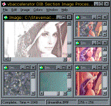
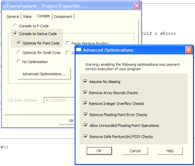

VB5 Image Processor (163K)
VB5 Image Processor (163K)
 VB6 Image Processor (149K)
VB6 Image Processor (149K)
 13 Jan 2003
13 Jan 2003
Added VB6 version
 Softening, Blurring, Sharpening and Embossing images
Softening, Blurring, Sharpening and Embossing images
 Hue Luminance and Saturation (HLS) Model and Manipulating Colours
Hue Luminance and Saturation (HLS) Model and Manipulating Colours
 Floyd-Stucci Colour Reduction Methods and Gray Scaling
Floyd-Stucci Colour Reduction Methods and Gray Scaling

Image Processing Using DIB Sections
Everything to do with images: blur, soften, sharpen, colourise, colour reduce, resample ...
This sample demonstrates a new 24 bit image processor using the DIB Section GDI object, allowing you to perform a whole raft of standard Image Processing functions, including blurring, sharpening, colourising, resampling and image arithmetic.
What you can do with this sample
- Image Processing
- Blurring and softening
- Sharpening
- Embossing
- Customised filters
- Minimum, Maximum and Average Rank filters for impressionistic effects
- Colour Manipulation
- Colourise images
- Darken and Lighten images
- Gray scale images
- Floyd-Stucci Black and White conversion
- Decrease colour depth by dithering and matching to a specified palette.
- Image Combination
- Add, subtract with offsets or take the darkest/lightest pixels
- Resample Images
- Demonstrating how to use interpolation to create a smooth resized version of an image.
Supporting Technical Articles
Some more detail on how to implement the various image processing effects are provided in these articles:
- Softening, Blurring, Sharpening and Embossing images
- Rank Filters
- Hue, Luminance and Saturation (HLS) Model and Manipulating Colours
- Floyd-Stucci Colour Reduction Method and Gray Scaling
Some Notes
Although all the samples should run on systems with a colour depth of 256 colours or less, there will be two problems:
- The image will be rendered by GDI doing an arbitrary colour depth reduction.
- GDI is often slow when colour reducing DIBs to display on the screen.
As usual, with graphics code, running it in the IDE will be like watching paint dry. To get the techniques in these samples to perform, you must compile to Native Code (optimised for Fast Code). You can also get a significant speed increase (60% or more) by checking all the Advanced Optimisations settings:
